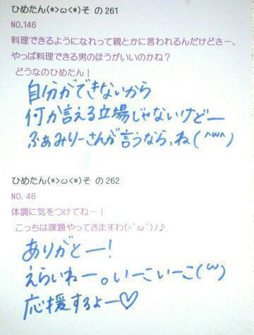

| 2013/05 24 Fri | ひめたん大図鑑46(2012年4 月) |
ひめたん大図鑑とは何か。
それは、いわゆる
「過去の質問返しをまとめたもの」って感じかな。
過去なので時制とかおかしなことになる質問も
中にはあるかもだけど、
ま、そゆことなんでね(*^^*)
それは、いわゆる
「過去の質問返しをまとめたもの」って感じかな。
過去なので時制とかおかしなことになる質問も
中にはあるかもだけど、
ま、そゆことなんでね(*^^*)

957
 個別で会えるんだけど今から緊張してる(゜ρ゜)笑
個別で会えるんだけど今から緊張してる(゜ρ゜)笑
どうやったら仲良く話せる?
どうしても緊張しちゃうなら、いっそのことひめたんを好きじゃな...くな...
ったら困る(ノω;`)る
てかひめたんも緊張する
958
乃木じゃーはHIMEKAWAじゃなくてHIMEKAの作ってもらえたのかな?
HIMEKAWAジャージは幻と化しました。
ただいまHIMEKAジャージ製作していただいてるなう♪
959
何か恐怖症とかある?(・ω・)
ひとりの夜道は怖い。
ひとりのエレベーターもちょっと怖い。
飛ぶ虫さん、跳ぶ虫さん、
からすさん、さらに怖い。
何回解いても答えが合わない計算、
怪奇並に怖い-('・・`)←
何回数えても数が合わない階段と同じだよ。
計算って、怖い。
960
親や兄弟姉妹を乃木坂メンバーから選んだらどんな家族になる?
ぱぱ→かずみさん(高山一実chan)
まま→まいまい(深川麻衣chan)
長女→みさみさ(衛藤美彩chan)
次女→みゅみゅ(若月佑美chan)
三女→まりか(伊藤万理華chan)
末っ子ひめたん!
ひめたん的乃木坂家族選抜(^ω^)
961
ガチャピンは好きですか?
可愛いよねっ!
962
ピルクルは好きですか?
ああcmが可愛いやつ(^^)
お腹ぱかってあけるやつよね♪
飲んだことないけど、あのゆるゆる具合は好き!
963
遅い後ろのほうのコメントもみてくれているかな?
もちろん見てる☆
1日何回ブログ訪問してると思ってるのさ(`・・)どやあ
964
広島駅のあたりでいい食べ物の店あればぜひ教えてくださいませ(^-^)
「ミニヨン」(シュークリーム)
「としのや」(府中焼)
ぜひ行ってみてくださいませ♪
965
中元さんの地元で自慢できる食べ物、飲み物は?
お好み焼き、もみじまんじゅう(ω)!
966
最近ひめかに会えなさすぎて夢にひめかがでてきた!!
むしろ幻覚?も見えてきた!!笑
967
夢にひめたん出て来たんじゃけどこりゃひめたん依存症かね?(*^^*)
重症!
中元先生が診察するので、とりあえずカルテに夢の内容を書き出して下さい//
968
2nd個別大阪ないからひめたんに逢えないよ...どうしよう?
寂しいね(;'∩`)
我慢できなかったら泣いてもいいよ?
ひめたん飛んでくよ?
あれ会えちゃうわ♪わら
969
プレゼントしたいんだけど何がいいですか?
お気持ちだけで十分嬉しいよー。
けどあえて答えるなら...
ひめきゅんさんが「これひめたん好きそうかも?」って思うものを
見てみたい(*^^*)心が繋がってるなら、ひめたんの好みもわかる...よね?
970
好きなアーティストにももクロZ入ってたけどどの曲が好きなの?(^^ゞ
いちばんはオレンジノート!
この前ゆっきーな(柏幸奈chan)にももいろパンチのダンス教えてもらってから
それも好き(o>ω<o)♪
971
ひめたんの行く高校ってどういう制服なの?
なかなかお気に入りだよ(*/ω＼*)
ジャンパースカートの中学校生活を経た中元さんにとっては
上と下が離れてるだけで感動←
芋っ子中元(^^)
972
「ちゃお」「りぼん」「なかよし」の中で何を読んでましたか?
ちゃお派!
小2とかから読んでたよ(*^^*)
973
富士急行ったことある-?
ないー('・・`)
春休みだしどっかテーマパークとか行きたいなあ...
974
山口に遊びに来たことあるのかな?
ありますお(・∀・)
美川ムーバレーとか秋芳洞とか海響館とかとか♪
今日は
レコーディングしてきましたー∩^ω^∩
夏らしい曲になるんじゃないかなーと
ひめたは思っておりますー
お楽しみにー♪


(＊´・ω・＊)
コメント(131)
2013/05/24 00:12